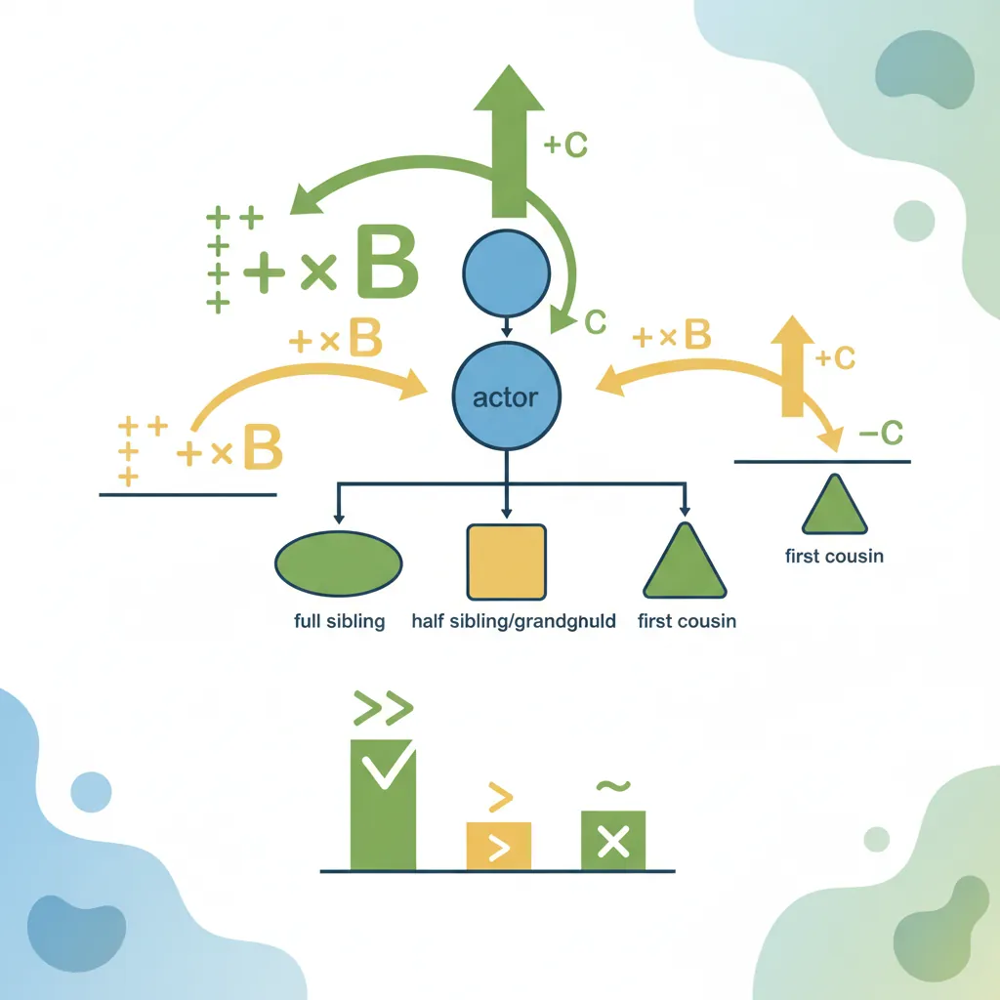
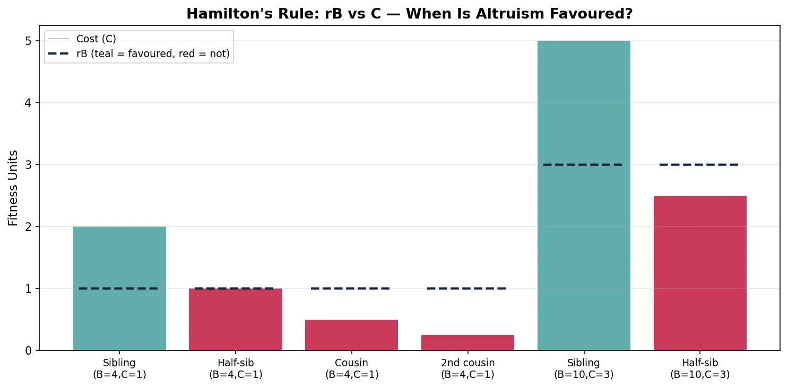
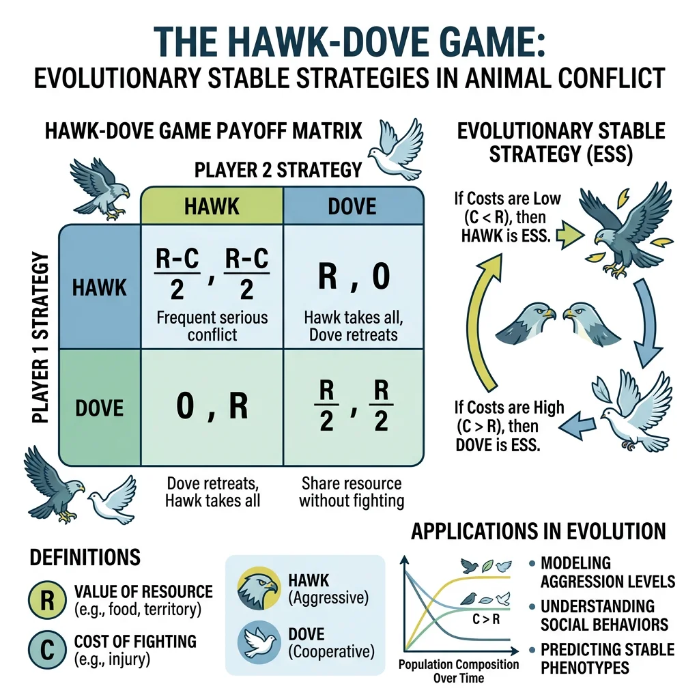
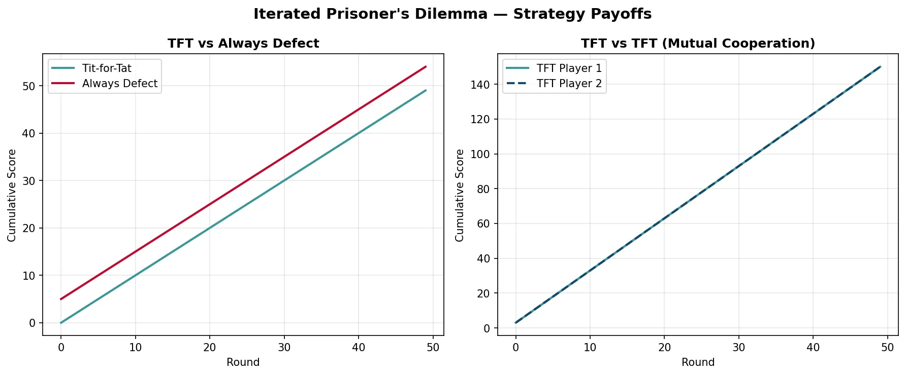
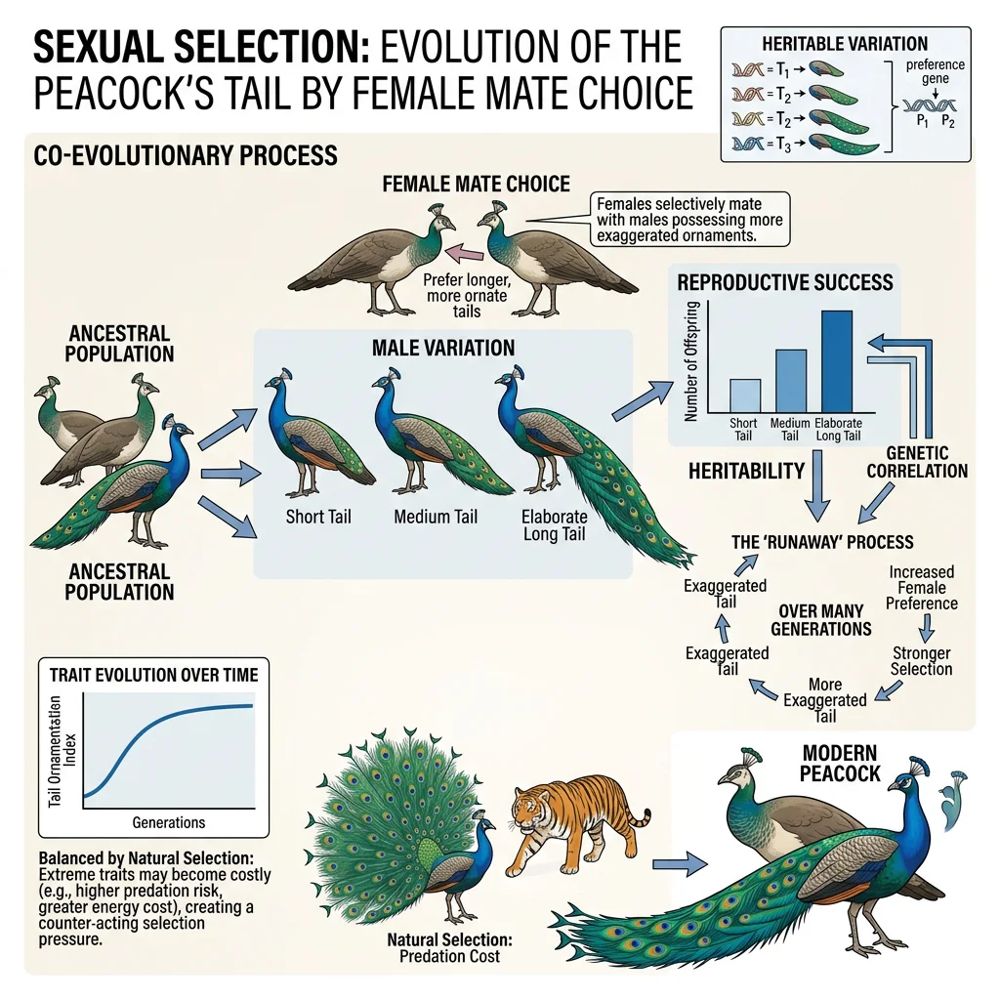
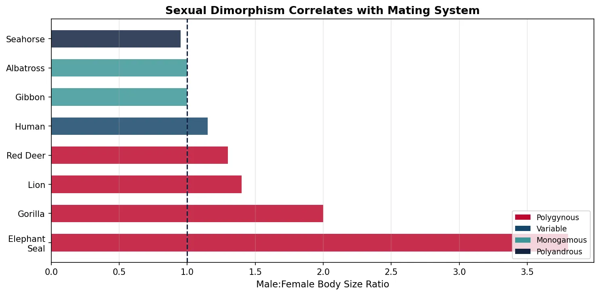
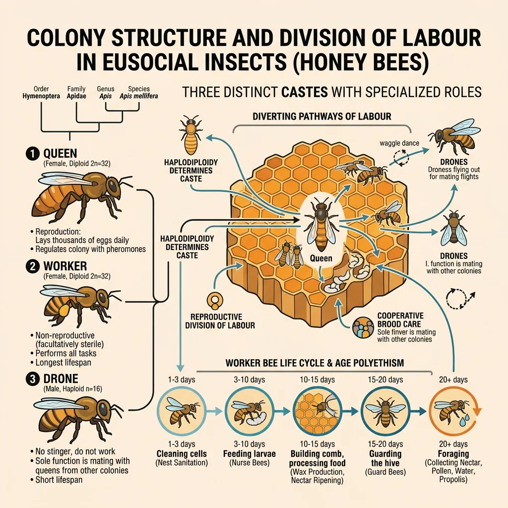
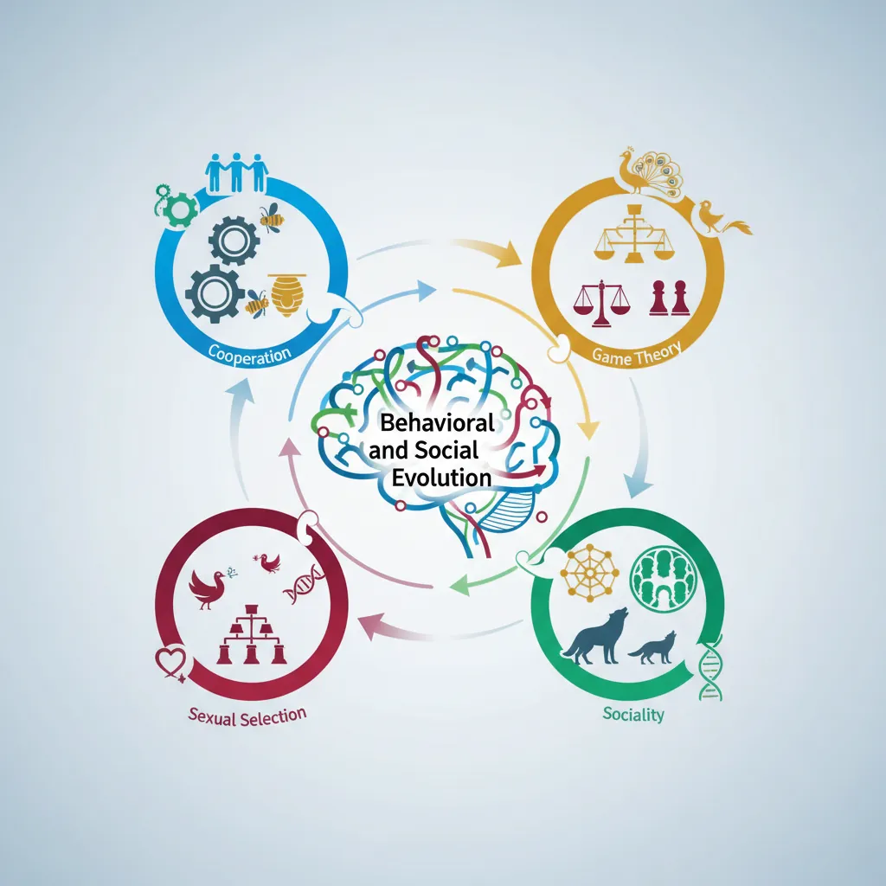

Evolutionary Biology Mastery
Darwin, Wallace & Natural Selection
Foundations, selection types, inclusive fitness, trade-offsGenetics of Evolution
DNA, population genetics, Hardy-Weinberg, molecular clocksSpeciation & Adaptive Radiation
Species concepts, reproductive isolation, rapid diversificationPhylogenetics & Taxonomy
Tree thinking, cladistics, molecular phylogenetics, classificationHuman Evolution & Migration
Hominin lineage, fossil evidence, Neanderthals, cultural evolutionCo-evolution & Symbiosis
Arms races, host-parasite, endosymbiosis, holobiontMass Extinctions & Biodiversity
Big Five extinctions, biodiversity patterns, conservationEvolutionary Developmental Biology
Hox genes, morphological innovation, heterochronyBehavioral & Social Evolution
Cooperation, game theory, sexual strategies, social insectsMathematical & Theoretical Evolution
Fitness landscapes, adaptive dynamics, ESS, selection modelsPaleontology & Fossil Interpretation
Radiometric dating, transitional fossils, taphonomyEvolutionary Genomics
Comparative genomics, gene duplication, HGT, epigeneticsEvolution of Cooperation
Darwin himself called it "one special difficulty" — why would an organism sacrifice its own reproductive fitness to help another? If natural selection rewards individuals that leave the most offspring, how can behaviours that reduce personal reproduction ever evolve? The answer has reshaped our understanding of evolution, revealing that the "selfish gene" can produce remarkably generous organisms.

Altruism — Self-Sacrifice in Nature
Biological altruism is defined rigorously: a behaviour that increases the fitness of the recipient while decreasing the fitness of the actor. Key examples include:
- Worker honeybees — sterile females that spend their lives gathering food and tending to the queen's offspring, never reproducing themselves
- Ground squirrel alarm calls — Belding's ground squirrels give alarm calls when predators approach, drawing attention to themselves but warning relatives
- Vampire bat blood sharing — bats who had a successful blood meal regurgitate blood for roostmates who failed — even unrelated individuals
- Slime mould sacrifice — in Dictyostelium, some cells form a stalk that lifts spores for dispersal but die in the process
Kin Selection & Hamilton's Rule
In 1964, W.D. Hamilton solved the altruism puzzle with an elegant mathematical framework. An altruistic gene can spread if the benefit to relatives (weighted by their relatedness to the altruist) exceeds the cost to the altruist:
r = coefficient of relatedness (probability of sharing the gene by common descent)
B = benefit to recipient (in reproductive fitness units)
C = cost to actor (in reproductive fitness units)
When rB > C, the gene for altruism increases in frequency even though the individual altruist pays a cost. The gene "sees" copies of itself in relatives and acts to propagate those copies. J.B.S. Haldane famously quipped: "I would lay down my life for two brothers or eight cousins" — which captures Hamilton's mathematics perfectly (r = 0.5 for siblings, r = 0.125 for cousins).
Hamilton's "Genetical Evolution of Social Behaviour"
W.D. Hamilton published two papers in the Journal of Theoretical Biology that introduced the concept of inclusive fitness — an organism's total genetic contribution to the next generation, including genes passed through relatives' reproduction. Hamilton showed that natural selection acts not on individual reproductive success alone, but on inclusive fitness. This framework explained why eusociality evolved repeatedly in Hymenoptera (ants, bees, wasps) — haplodiploidy makes sisters more related to each other (r = 0.75) than to their own daughters (r = 0.5), so helping the queen reproduce can be genetically more profitable than reproducing directly.
import numpy as np
import matplotlib.pyplot as plt
# Hamilton's Rule: visualise when altruism is favoured
relatedness = np.array([0.5, 0.25, 0.125, 0.0625, 0.5, 0.25])
benefit = np.array([4, 4, 4, 4, 10, 10])
cost = np.array([1, 1, 1, 1, 3, 3])
labels = ['Sibling\n(B=4,C=1)', 'Half-sib\n(B=4,C=1)', 'Cousin\n(B=4,C=1)',
'2nd cousin\n(B=4,C=1)', 'Sibling\n(B=10,C=3)', 'Half-sib\n(B=10,C=3)']
rB = relatedness * benefit
favoured = rB > cost
fig, ax = plt.subplots(figsize=(10, 5))
colors = ['#3B9797' if f else '#BF092F' for f in favoured]
bars = ax.bar(range(len(labels)), rB, color=colors, alpha=0.8, label='rB (benefit × relatedness)')
ax.axhline(y=0, color='black', linewidth=0.5)
# Plot cost line for each bar
for i, c in enumerate(cost):
ax.hlines(c, i - 0.35, i + 0.35, color='#132440', linewidth=2, linestyle='--')
ax.set_xticks(range(len(labels)))
ax.set_xticklabels(labels, fontsize=9)
ax.set_ylabel('Fitness Units', fontsize=11)
ax.set_title("Hamilton's Rule: rB vs C — When Is Altruism Favoured?",
fontsize=13, fontweight='bold')
ax.legend(['Cost (C)', 'rB (teal = favoured, red = not)'], fontsize=9)
ax.grid(axis='y', alpha=0.3)
plt.tight_layout()
plt.show()

Reciprocal Altruism
Altruism between non-relatives requires a different explanation. Robert Trivers (1971) proposed reciprocal altruism — individuals help unrelated others when there is a high probability of the favour being returned in the future. This works when:
- Repeated interactions — individuals encounter each other frequently
- Cheater detection — the ability to recognise and punish individuals who take but don't give back
- Long memory — organisms can remember who helped and who cheated
- Cost/benefit asymmetry — the cost to the helper is small but the benefit to the recipient is large (like vampire bat blood sharing — the donor loses little energy but the starving recipient survives)
Vampire Bat Blood Sharing — Reciprocity in Action
Gerald Wilkinson studied common vampire bats (Desmodus rotundus) in Costa Rica and discovered that bats share blood meals with both kin and non-kin, but the probability of sharing correlates strongly with past reciprocity. Bats who had received blood in the past were significantly more likely to receive blood again in the future from the same individual. Bats also preferentially shared with frequent roostmates, regardless of relatedness. A bat that fails to feed for three consecutive nights will die — so the cost of donating a small blood meal (a few hours of stored energy) is far less than the benefit of preventing starvation. The system is stabilised by cheater punishment: bats who fail to reciprocate are refused future help.
The Group Selection Debate
A long-standing controversy in evolutionary biology concerns whether natural selection acts on groups as well as individuals. The debate has evolved through several phases:
| Position | Key Proponent | Argument | Status |
|---|---|---|---|
| Naïve Group Selection | Wynne-Edwards (1962) | Animals restrain reproduction "for the good of the species" | Largely rejected |
| Gene-level Selection | Williams (1966), Dawkins (1976) | Selection acts on genes via individual vehicles; group benefit is a by-product | Mainstream view |
| Multi-level Selection | D.S. Wilson, Sober (1994) | Selection operates simultaneously at individual and group levels; the balance determines outcome | Debated; gaining support |
| Major Transitions | Maynard Smith & Szathmáry (1995) | Major evolutionary transitions (cells → organisms, organisms → colonies) involve lower-level units surrendering autonomy for group benefit | Widely accepted framework |
Evolutionary Game Theory
Evolutionary game theory applies mathematical models from economics and strategic decision-making to biological interactions. Unlike classical game theory where rational players choose strategies, evolutionary game theory considers populations of organisms playing strategies encoded in their genes — with natural selection as the "referee" determining winners and losers.

The Hawk-Dove Game
The Hawk-Dove game (also called the "chicken game") is the foundational model of conflict over resources. Imagine two animals competing for a food item worth V fitness units. Each can play one of two strategies:
- Hawk — fight aggressively; never retreat
- Dove — display peacefully; retreat if opponent escalates
| vs Hawk | vs Dove | |
|---|---|---|
| Hawk | (V−C)/2 each (fight; random winner, both may be injured) | V to Hawk, 0 to Dove (Dove retreats) |
| Dove | 0 to Dove, V to Hawk | V/2 each (share via display, time cost) |
When C > V (fighting cost exceeds resource value), neither pure Hawk nor pure Dove is stable. The population settles at a mixed ESS — a proportion of Hawks and Doves that balances payoffs. This explains why most animal contests are settled by ritualized display rather than lethal combat.
The Prisoner's Dilemma & the Evolution of Cooperation
The Prisoner's Dilemma captures the fundamental tension between individual self-interest and mutual benefit:
| Partner Cooperates | Partner Defects | |
|---|---|---|
| You Cooperate | Both get R (Reward for mutual cooperation) | You get S (Sucker's payoff), partner gets T (Temptation) |
| You Defect | You get T (Temptation), partner gets S (Sucker's payoff) | Both get P (Punishment for mutual defection) |
Where T > R > P > S. In a single interaction, defecting always pays more regardless of what the other does. Yet mutual cooperation (R, R) beats mutual defection (P, P). How can cooperation evolve?
Axelrod's Tournament — Tit-for-Tat Wins
Robert Axelrod invited game theorists and biologists to submit computer programmes for a round-robin Iterated Prisoner's Dilemma tournament. The winning strategy was the simplest: Tit-for-Tat (submitted by Anatol Rapoport). It cooperates on the first move, then copies whatever the opponent did in the previous round. Tit-for-Tat succeeded because it was: (1) Nice — never defects first; (2) Retaliatory — punishes defection immediately; (3) Forgiving — returns to cooperation if opponent cooperates; (4) Clear — predictable strategy that opponents can learn to cooperate with. This demonstrated mathematically how reciprocal altruism can evolve and persist when organisms interact repeatedly.
import numpy as np
import matplotlib.pyplot as plt
# Simulate iterated Prisoner's Dilemma: Tit-for-Tat vs Always Defect
np.random.seed(42)
rounds = 50
payoffs = {'CC': (3, 3), 'CD': (0, 5), 'DC': (5, 0), 'DD': (1, 1)}
# Tit-for-Tat vs Always Defect
tft_score, ad_score = [], []
tft_total, ad_total = 0, 0
tft_last = 'C'
for r in range(rounds):
ad_move = 'D' # Always defect
tft_move = tft_last
outcome = tft_move + ad_move
tft_pay, ad_pay = payoffs[outcome]
tft_total += tft_pay
ad_total += ad_pay
tft_score.append(tft_total)
ad_score.append(ad_total)
tft_last = ad_move # Copy opponent's last move
# Tit-for-Tat vs Tit-for-Tat
tft1_total, tft2_total = 0, 0
tft1_score, tft2_score = [], []
for r in range(rounds):
pay = payoffs['CC'] # Both always cooperate after first round
tft1_total += pay[0]
tft2_total += pay[1]
tft1_score.append(tft1_total)
tft2_score.append(tft2_total)
fig, (ax1, ax2) = plt.subplots(1, 2, figsize=(12, 5))
ax1.plot(tft_score, color='#3B9797', linewidth=2, label='Tit-for-Tat')
ax1.plot(ad_score, color='#BF092F', linewidth=2, label='Always Defect')
ax1.set_xlabel('Round')
ax1.set_ylabel('Cumulative Score')
ax1.set_title('TFT vs Always Defect', fontweight='bold')
ax1.legend()
ax1.grid(alpha=0.3)
ax2.plot(tft1_score, color='#3B9797', linewidth=2, label='TFT Player 1')
ax2.plot(tft2_score, color='#16476A', linewidth=2, linestyle='--', label='TFT Player 2')
ax2.set_xlabel('Round')
ax2.set_ylabel('Cumulative Score')
ax2.set_title('TFT vs TFT (Mutual Cooperation)', fontweight='bold')
ax2.legend()
ax2.grid(alpha=0.3)
plt.suptitle("Iterated Prisoner's Dilemma — Strategy Payoffs", fontsize=14, fontweight='bold')
plt.tight_layout()
plt.show()

Evolutionarily Stable Strategies (ESS)
John Maynard Smith (1973) formalized the concept of an Evolutionarily Stable Strategy — a strategy that, once adopted by a population, cannot be invaded by any alternative strategy. A strategy I is an ESS if:
- For any mutant strategy J, E(I, I) > E(J, I) — the incumbent does better against itself than the mutant does against the incumbent, OR
- E(I, I) = E(J, I) AND E(I, J) > E(J, J) — if payoffs are equal against the incumbent, the incumbent does better against the mutant than the mutant does against itself
Sexual Selection & Strategies
Darwin identified a second great force alongside natural selection: sexual selection — selection arising from competition for mates. While natural selection favours survival, sexual selection can favour traits that reduce survival but increase mating success, explaining elaborate ornaments, displays, and weapons that seem maladaptive.

Mate Choice — Intersexual Selection
When one sex (usually females) is choosy, the other sex evolves exaggerated traits to attract mates. Two major hypotheses explain why choosy females prefer ornamental males:
| Hypothesis | Mechanism | Classic Example | Key Prediction |
|---|---|---|---|
| Good Genes (Zahavi, 1975) | Ornaments are "honest signals" — only genetically superior males can bear the cost of a handicap | Peacock's tail — maintains costly plumage despite predation risk, signalling parasite resistance | Offspring of ornamented males should have higher survival |
| Runaway Selection (Fisher, 1930) | Female preference and male trait become genetically correlated, driving both to extremes in a positive feedback loop | Long-tailed widowbird — tail length far exceeds aerodynamic optimum | Trait exaggeration until survival costs halt the runaway |
| Sensory Bias | Female preference pre-dates the male trait — males evolve traits that exploit existing sensory biases in females | Swordtail fish — females prefer males with sword-like tail extensions, even in species that lack them naturally | Related species without ornaments should still show latent female preference |
Long-Tailed Widowbird — Experimental Evidence for Female Choice
Malte Andersson tested female mate choice in long-tailed widowbirds (Euplectes progne) by experimentally manipulating male tail length. He shortened some males' tails by cutting them and lengthened other males' tails by gluing the cut feathers on. Males with experimentally elongated tails attracted significantly more females (nesting in their territories) than control or shortened males — providing direct evidence that females choose mates based on tail length. Since males with naturally long tails don't survive longer, this supports Fisherian runaway selection or honest signalling of genetic quality under handicap.
Intrasexual Competition
Intrasexual selection occurs when members of the same sex (usually males) compete directly for access to mates. This drives the evolution of weapons, large body size, and aggressive displays:
- Antlers and horns — deer, elk, and bighorn sheep use antlers/horns in male-male combat; larger weapons win more fights and more mates
- Body size dimorphism — elephant seal males can weigh 4× more than females; only the largest males monopolise harems (dominant bull controls 50+ females)
- Sperm competition — when females mate with multiple males, competition shifts to the gamete level. Males evolve larger testes (relative to body size), faster sperm, copulatory plugs, or sperm displacement mechanisms
- Alternative mating strategies — sneaker males in bluegill sunfish mimic females to gain covert access to spawning nests, bypassing dominant male territory defence
Parental Investment Theory
Trivers (1972) proposed that the sex investing more in offspring (usually females via eggs, gestation, lactation) becomes the limiting resource, making the less-investing sex (usually males) compete more intensely for mating opportunities.
import numpy as np
import matplotlib.pyplot as plt
# Sexual dimorphism vs mating system — body size ratio
species = ['Elephant\nSeal', 'Gorilla', 'Lion', 'Red Deer', 'Human',
'Gibbon', 'Albatross', 'Seahorse']
male_female_ratio = [3.8, 2.0, 1.4, 1.3, 1.15, 1.0, 1.0, 0.95]
mating = ['Polygynous', 'Polygynous', 'Polygynous', 'Polygynous',
'Variable', 'Monogamous', 'Monogamous', 'Polyandrous']
colors = {'Polygynous': '#BF092F', 'Variable': '#16476A',
'Monogamous': '#3B9797', 'Polyandrous': '#132440'}
fig, ax = plt.subplots(figsize=(10, 5))
bar_colors = [colors[m] for m in mating]
bars = ax.barh(species, male_female_ratio, color=bar_colors, alpha=0.85, height=0.6)
ax.axvline(x=1.0, color='#132440', linestyle='--', linewidth=1.5, label='No dimorphism')
ax.set_xlabel('Male:Female Body Size Ratio', fontsize=11)
ax.set_title('Sexual Dimorphism Correlates with Mating System',
fontsize=13, fontweight='bold')
# Legend
from matplotlib.patches import Patch
legend_elements = [Patch(facecolor=c, label=l) for l, c in colors.items()]
ax.legend(handles=legend_elements, fontsize=9, loc='lower right')
ax.grid(axis='x', alpha=0.3)
plt.tight_layout()
plt.show()

Social Evolution
From ant colonies numbering millions to dolphin pods and human civilisations, sociality is one of evolution's most successful strategies. Understanding why some species form complex societies while others remain solitary requires integrating kin selection, game theory, and ecological constraints.

Social Insects & Eusociality
Eusociality is the most complex form of social organisation, defined by three characteristics: (1) cooperative brood care, (2) overlapping generations within the colony, and (3) a reproductive division of labour — most individuals are sterile workers.
The Insect Societies — Wilson's Synthesis
E.O. Wilson's monumental work synthesised decades of research on social insects — ants, bees, wasps, and termites — demonstrating that eusociality had evolved independently at least 11 times in Hymenoptera (ants, bees, wasps) and once in termites. Wilson initially championed kin selection (Hamilton's haplodiploidy hypothesis) as the primary explanation but later (controversially, in 2010) argued that ecological factors — particularly the defence of a shared nest — may be more important than relatedness in driving the evolution of eusociality. A key observation: termites are diploid (no haplodiploidy), yet they evolved eusociality independently, suggesting kin selection alone cannot explain all cases. The naked mole-rat — the only eusocial mammal — also lacks haplodiploidy, reinforcing this point.
| Caste | Role | Reproduction | Lifespan | Example (Honeybee) |
|---|---|---|---|---|
| Queen | Sole reproductive female | Mates once, lays all eggs | 2-5 years | Up to 2,000 eggs/day |
| Worker | Foraging, nursing, defence, nest building | Sterile (usually) | 6 weeks (summer) | ~50,000 per colony |
| Drone | Mating only | Mates with queen, then dies | ~8 weeks | ~1,000 per colony |
| Soldier | Colony defence (in some species) | Sterile | Variable | Absent in honeybees; present in army ants |
Dominance Hierarchies
Dominance hierarchies are rank-ordered social structures where higher-ranked individuals gain priority access to resources and mates. They reduce the cost of constant fighting — once rank is established, subordinates defer without combat.
- Pecking order — first described by Schjelderup-Ebbe (1922) in domestic chickens. Linear hierarchy: bird A dominates all, bird B dominates all except A, and so on
- Primate hierarchies — male chimpanzees form coalitions to achieve alpha status; rank determines mating access and grooming networks
- Queuing systems — in clownfish, a strict size-based hierarchy determines who becomes the breeding female when the current one dies. Fish carefully regulate their growth to maintain their rank position
- Signals of dominance — red coloration in cichlids, chest-beating in gorillas, antler size in deer
Cultural Transmission of Behaviour
Culture is not uniquely human. Many animal species transmit behaviours through social learning rather than genetic inheritance, creating parallel "cultural evolution" alongside genetic evolution:
- Bird song dialects — young birds learn local song dialects from adult tutors; populations separated by kilometres can have distinct dialects that persist across generations
- Tool use in chimpanzees — different populations have distinct tool-use traditions: nut-cracking with rocks (West Africa), termite fishing with sticks (East Africa), leaf-sponges for water. These behaviours are transmitted by observation and imitation
- Japanese macaque food washing — in 1953, a young female macaque named Imo invented sweet potato washing. The behaviour spread through social networks: first to her playmates, then their mothers, and across generations — a documented case of cultural innovation and transmission
- Cetacean culture — orca populations maintain distinct foraging traditions (some hunt seals, others specialise in fish), vocalisations, and social customs that persist for centuries
Exercises & Review

Exercise 1: Hamilton's Rule Application
A bird gives an alarm call that reduces its own survival by 1% (C = 0.01) but increases a nearby bird's survival by 3% (B = 0.03). Using Hamilton's Rule (rB > C), determine whether the alarm call is favoured by kin selection if the nearby bird is: (a) a sibling (r = 0.5), (b) a cousin (r = 0.125), (c) an unrelated neighbour (r = 0).
Show Answers
(a) Sibling: rB = 0.5 × 0.03 = 0.015 > 0.01 (C). YES — alarm calling is favoured. The inclusive fitness benefit exceeds the cost.
(b) Cousin: rB = 0.125 × 0.03 = 0.00375 < 0.01 (C). NO — alarm calling is NOT favoured by kin selection alone. The relatedness is too low for the fitness benefit to offset the cost.
(c) Unrelated: rB = 0 × 0.03 = 0 < 0.01 (C). NO — kin selection cannot explain altruism toward unrelated individuals. Reciprocal altruism or group selection would be needed.
Exercise 2: Hawk-Dove Equilibrium
In a population where a resource is worth V = 6 fitness units and a fight costs C = 10 units, calculate: (a) the expected payoff when Hawk meets Hawk, (b) why a pure Hawk population cannot be stable, and (c) the predicted frequency of Hawks at the mixed ESS (proportion of Hawks = V/C).
Show Answers
(a) Hawk vs Hawk payoff = (V − C)/2 = (6 − 10)/2 = −2 each. Both fighters lose fitness on average because the cost of injury exceeds the resource value.
(b) In a pure Hawk population, every contest results in a fight with expected payoff −2. A rare Dove mutant entering this population gets 0 from contests (retreats every time) — which is BETTER than −2. So Doves can invade a pure Hawk population. Therefore pure Hawk is not an ESS.
(c) At the mixed ESS, frequency of Hawks = V/C = 6/10 = 0.6 (60% Hawks, 40% Doves). At this equilibrium, Hawks and Doves have equal average payoffs, and neither strategy can invade.
Exercise 3: Sexual Selection Analysis
Explain why elephant seals show extreme sexual dimorphism (males are 4× larger than females) while gibbons show almost none (males and females are the same size). Relate your answer to mating system, variance in male reproductive success, and Trivers' parental investment theory.
Show Answer
Elephant seals are highly polygynous — dominant males monopolise harems of 50+ females, meaning there is enormous variance in male mating success (most males never mate; a few mate extensively). This intense intrasexual competition selects for large body size and aggressive weaponry. Females invest heavily in gestation/lactation and choose by assessing male fighting ability, further driving dimorphism.
Gibbons are socially monogamous — each male pairs with one female. Male mating success variance is low (most males who survive to adulthood find a mate). With little benefit from large size or fighting ability (no harems to monopolise), selection for sexual dimorphism is weak. Both sexes invest heavily in offspring care. This confirms Trivers' theory: high female investment + high variance in male success → strong sexual selection → dimorphism.
Downloadable Worksheet
Behavioral & Social Evolution Worksheet
Record your analysis of cooperation, game theory strategies, sexual selection, and social systems. Download as Word, Excel, or PDF.
Conclusion & Next Steps
Behavioral and social evolution reveals that organisms are not merely passive targets of natural selection — they are active strategists whose behaviours shape the selective environment. Hamilton's kin selection, Trivers' reciprocal altruism, and Maynard Smith's game theory provide the theoretical framework for understanding when cooperation, competition, and social complexity evolve. Sexual selection creates some of nature's most extravagant displays, while cultural transmission adds a fast-evolving inheritance system alongside DNA.